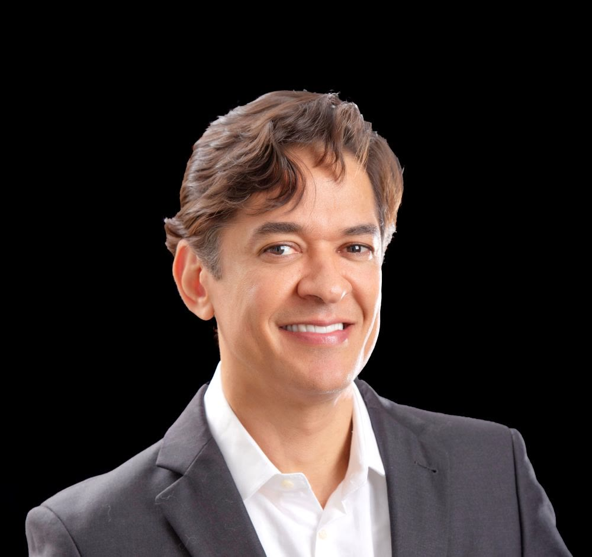

Sempre muito bem atendida, desde o contato para a marcação até a consulta médica. Dr. Vinicio dá verdadeira aula, tirando dúvidas e deixando-me tranquila. […] Seu atendimento pré e pós-cirúrgico com muita atenção e dedicação.
Cirurgia plástica · Pituba, Salvador
Experiência de quem ensina cirurgia plástica.
Membro Titular da SBCP, Diretor Médico do Hospital da Plástica da Bahia e professor da Escola Bahiana de Medicina há mais de 20 anos. Face, mamas e contorno corporal com planejamento individual.

5,0 ★★★★★160 avaliações no Google
CRM-BA 13286RQE 5456 · Cirurgia Plástica
2002Especialista pela Sociedade
Brasileira de Cirurgia Plástica
Brasileira de Cirurgia Plástica
TitularMembro Titular da SBCP
desde 2006
desde 2006
20+ anosProfessor da Escola Bahiana
de Medicina
de Medicina
HPBADiretor Médico do Hospital
da Plástica da Bahia
da Plástica da Bahia
Trajetória
Mais de duas décadas entre a sala de cirurgia e a sala de aula.
Uma paciente resumiu assim: “Dr. Vinicio dá verdadeira aula, tirando dúvidas e deixando-me tranquila.”
1997Medicina pela Escola Bahiana de Medicina
Formação médica em Salvador.
ResidênciasCirurgia Geral e Cirurgia Plástica
Hospital São Rafael, Salvador.
2002Especialista pela SBCP
Título de especialista da Sociedade Brasileira de Cirurgia Plástica.
2006Membro Titular da SBCP
Na regional Bahia, foi coordenador de informática, tesoureiro, secretário e presidente.
DocênciaProfessor há mais de 20 anos
Curso de Medicina da Escola Bahiana, com capítulo de livro e artigos nacionais e internacionais publicados.
2022Câmara Técnica do CREMEB
Integra a câmara técnica do Conselho Regional de Medicina da Bahia.
HojeDiretor Médico do Hospital da Plástica da Bahia
E à frente da própria clínica no Complexo Odonto-Médico Itaigara, na Pituba.
Procedimentos
Da face ao contorno corporal, com técnica estruturada
Face
- Lifting facialReposicionamento dos tecidos profundos e correção da flacidez da face e do pescoço.
- RinoplastiaTécnica aberta estruturada com enxertos, com anestesia local ou geral.
- Plástica das pálpebrasRetirada de pele e bolsas de gordura, com anestesia local e sedação.
- Orelhas proeminentesCorreção das “orelhas em abano”.
Mamas
- Prótese mamáriaImplantes com técnicas estruturadas nos diversos planos, conforme o quadro clínico.
- Mamoplastia redutoraRedução das mamas, com redução e elevação das aréolas.
- GinecomastiaTratamento do aumento das mamas em homens.
Corpo
- LipoaspiraçãoLipo de definição com uso de tecnologia, com drenagens e cintas no pós-operatório.
- AbdominoplastiaRetirada de pele e tratamento da diástase, normalmente associada à lipoaspiração.
- BraquioplastiaTratamento da flacidez dos braços.
- Prótese de panturrilhaVolume e harmonia das pernas com o restante do corpo.
Consultório
- Toxina botulínicaTratamento das rugas de expressão.
- Ácido hialurônicoReposição do volume que se perde com o envelhecimento.
- Bioestimulador de colágenoRejuvenescimento da pele com estímulo ao colágeno.
- Rejuvenescimento das mãosEnxerto de gordura para volume e qualidade da pele.
Cada indicação é definida em consulta, após avaliação médica individualizada. Tempo de internação e recuperação variam conforme o procedimento e o caso.
Avaliações no Google
A confiança de quem já foi atendido
5,0★★★★★
160 avaliações públicas
no Google Maps
160 avaliações públicas
no Google Maps
Ele é um profissional atencioso, que faz uma escuta qualificada, explica sobre o procedimento e passa muita segurança ao paciente. Me senti super acolhida e satisfeita!
Um profissional extremamente competente, seguro e cuidadoso em cada detalhe. Transmite confiança desde o primeiro momento e demonstra verdadeira preocupação com o bem-estar do paciente.
Desde 2009, Dr. Vinicio Moitinho faz parte da minha jornada de autoestima e autocuidado. […] Gratidão por tanto cuidado e excelência.
Consultório
Onde e quando atendemos
Horário de atendimento
Segunda-feira08:00 – 18:00
Terça-feira08:00 – 18:00
Quarta-feira08:00 – 18:00
Quinta-feira08:00 – 18:00
Sexta-feira08:00 – 18:00
SábadoFechado
DomingoFechado
Ed. Louis Pasteur · salas 1403 e 1404Complexo Odonto-Médico Itaigara
Av. Antônio Carlos Magalhães, 585 · Pituba · Salvador · BA
Dúvidas frequentes
Antes da sua consulta
Quais procedimentos o Dr. Vinicio realiza?
Cirurgias de face (lifting, rinoplastia, pálpebras e orelhas), mamas (prótese, redução e ginecomastia), corpo (lipoaspiração, abdominoplastia, braquioplastia e prótese de panturrilha) e procedimentos de consultório, como toxina botulínica, ácido hialurônico e bioestimulador de colágeno.
A consulta já define a cirurgia?
A indicação é definida depois de avaliação médica individualizada, considerando o seu quadro clínico, seus objetivos e a segurança do procedimento.
Como é o pós-operatório?
Varia conforme o procedimento. Em cirurgias de contorno corporal, por exemplo, costumam ser indicadas drenagens linfáticas e cintas modeladoras. Todas as orientações são passadas em consulta.
Onde fica a clínica?
No Complexo Odonto-Médico Itaigara, Ed. Louis Pasteur, salas 1403 e 1404, Av. Antônio Carlos Magalhães, 585, Pituba. Atendimento de segunda a sexta, das 8h às 18h.
Próximo passo
Converse com quem tem mais de duas décadas de cirurgia plástica.
Agende sua consulta na Pituba, de segunda a sexta, das 8h às 18h.
Agendar pelo WhatsApp